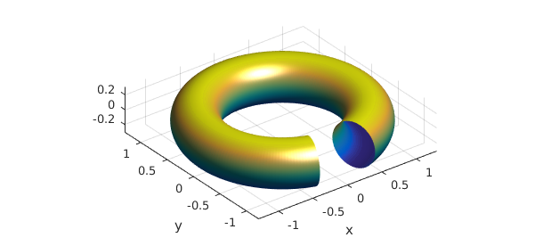
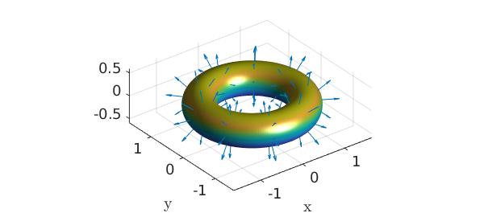
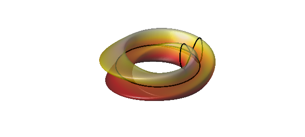

15.1 What is a chebfun2v?
Chebfun2 can also represent vector-valued functions, which take the form of chebfun2v objects. Usually we use a lower case letter like $f$ for a chebfun2 and an upper case letter like $F$ for a chebfun2v.
Chebfun2 represents a vector-valued function $F(x,y) = (f(x,y);g(x,y))$ by approximating each component by a low rank approximant, as described in Section 12.8. There are two ways to form a chebfun2v: either by explicitly calling the constructor, or by vertical concatenation of two chebfun2 objects. Here are these two alternatives:
d = [0 1 0 2]; F = chebfun2v(@(x,y) sin(x.*y), @(x,y) cos(y), d); f = chebfun2(@(x,y) sin(x.*y), d); g = chebfun2(@(x,y) cos(y), d); G = [f;g]
G =
chebfun2v object (Column vector) containing:
chebfun2 object
domain rank corner values
[ 0, 1] x [ 0, 2] 7 [3.6e-23 3.2e-17 1.7e-17 0.91]
vertical scale = 1
chebfun2 object
domain rank corner values
[ 0, 1] x [ 0, 2] 1 [ 1 1 -0.42 -0.42]
vertical scale = 1
Note that displaying a chebfun2v shows that it is a vector of two chebfun2 objects.
15.2 Algebraic operations
Chebfun2v objects are useful for performing 2D vector calculus. The basic algebraic operations are scalar multiplication, vector addition, dot product and cross product.
Scalar multiplication is the product of a scalar function with a vector function:
f = chebfun2(@(x,y) exp(-(x.*y).^2/20), d); f*F
ans =
chebfun2v object (Column vector) containing:
chebfun2 object
domain rank corner values
[ 0, 1] x [ 0, 2] 8 [1.3e-20 1.7e-16 2.2e-16 0.74]
vertical scale = 0.89
chebfun2 object
domain rank corner values
[ 0, 1] x [ 0, 2] 7 [ 1 1 -0.42 -0.34]
vertical scale = 1
Vector addition yields another chebfun2v and satisfies the parallelogram law:
plaw = abs((2*norm(F)^2 + 2*norm(G)^2) - (norm(F+G)^2 + norm(F-G)^2));
fprintf('Parallelogram law holds with error = %10.5e\n',plaw)
Parallelogram law holds with error = 4.44089e-15
The dot product combines two vector functions into a scalar function. If the dot product of two chebfun2v objects takes the value zero at some $(x,y)$, then the vector-valued functions are orthogonal there. For example, the following code segment determines a curve along which two vector-valued functions are orthogonal:
F = chebfun2v(@(x,y) sin(x.*y), @(x,y) cos(y),d); G = chebfun2v(@(x,y) cos(4*x.*y), @(x,y) x + x.*y.^2,d); plot(roots(dot(F,G))), axis equal, axis(d)

The cross product for 2D vector fields works as follows.
help chebfun2v/cross
CROSS Vector cross product.
CROSS(F, G) returns the cross product of the CHEBFUN2V objects F and G. If F
and G both have two components, then it returns the CHEBFUN2 representing
CROSS(F,G) = F(1) * G(2) - F(2) * G(1)
where F = (F(1); F(2)) and G = (G(1); G(2)). If F and G have three
components then it returns the CHEBFUN2V representing the 3D cross
product.
15.3 Differential operators
Vector calculus also involves various differential operators defined on scalar- or vector-valued functions such as gradient, curl, divergence, and Laplacian.
The gradient of a chebfun2 for a scalar function $f(x,y)$ represents, geometrically, the direction and magnitude of steepest ascent of $f$. If the gradient of $f$ is $0$ at $(x,y)$, then $f$ has a critical point at $(x,y)$. Here are the critical points of a sum of Gaussian bumps:
f = chebfun2(0);
rng('default')
for k = 1:10
x0 = 2*rand-1; y0 = 2*rand-1;
f = f + chebfun2(@(x,y) exp(-10*((x-x0).^2 + (y-y0).^2)));
end
plot(f), hold on
r = roots(gradient(f));
plot3(r(:,1),r(:,2),f(r(:,1),r(:,2)),'k.','markersize',20)
zlim([0 4]), hold off, colormap(pink)

The curl of 2D vector function is a scalar function:
help chebfun2v/curl
CURL curl of a CHEBFUN2V
S = CURL(F) returns the CHEBFUN2 of the curl of F. If F is a CHEBFUN2V with
two components then it returns the CHEBFUN2 representing
CURL(F) = F(2)_x - F(1)_y,
where F = (F(1),F(2)). If F is a CHEBFUN2V with three components then it
returns the CHEBFUN2V representing the 3D curl operation.
If the chebfun2v $F$ describes the velocity field of fluid flow, for example, then curl(F) is the vorticity, equal to twice the angular speed of a particle in the flow at each point. A particle moving in a gradient field has zero angular speed and hence, the curl of the gradient is zero. We can check this numerically:
norm(curl(gradient(f)))
ans =
0
The divergence of a chebfun2v is also a scalar function:
help chebfun2v/divergence
DIVERGENCE Divergence of a CHEBFUN2V.
DIVERGENCE(F) returns the divergence of the CHEBFUN2V i.e.,
divergence(F) = F_x + F_y.
See also DIV.
This measures a vector field's distribution of sources or sinks. The Laplacian is closely related and is the divergence of the gradient,
norm(laplacian(f) - divergence(gradient(f)))
ans =
0
15.4 Line integrals
Given a vector field $F$, we can compute the line integral along a curve with the command integral:
help chebfun2v/integral
INTEGRAL Line integration of a CHEBFUN2V.
INTEGRAL(F, C) computes the line integral of F along the curve C, i.e.,
/
INTEGRAL(F, C) = | < F(r), dr >
/
C
where the curve C is parameterised by the complex curve r(t).
The gradient theorem says that if $F$ is a gradient field, then the line integral along a smooth curve only depends on the end points of that curve. We can check this numerically:
f = chebfun2(@(x,y) cos(10*x.*y.^2) + exp(-x.^2)); % chebfun2 F = gradient(f); % gradient (chebfun2v) C = chebfun(@(t) t.*exp(10i*t),[0 1]); % spiral curve v = integral(F,C);ends = f(cos(10),sin(10))-f(0,0); % line integral abs(v-ends) % gradient theorem
ans =
1.776356839400250e-15
15.5 Phase diagram
A phase diagram is a graphical representation of a system of trajectories for a two-variable autonomous dynamical system. Chebfun2 plots phase diagrams with the quiver command. Note that there is a potential terminological ambiguity in that a "phase portrait" can also refer to a portrait of a complex-valued function (see section 12.7).
In addition, Chebfun2 makes it easy to compute and plot individual trajectories of a vector field. If $F$ is a chebfun2v, then ode45(F,tspan,y0) computes a trajectory of the autonomous system $dx/dt=f(x,y)$, $dy/dt=g(x,y)$, where $f$ and $g$ are the first and second components of $F$. (This use of ode45 is inconsistent with Chebfun's recommended use of the backslash operator for solving ODEs in other contexts.) Given a prescribed time interval and initial conditions, this command returns a complex-valued chebfun representing the trajectory in the form $x(t) + iy(t)$. For example:
d = 0.04; a = 1; b = -.75;
F = chebfun2v(@(x,y)y, @(x,y) -d*y - b*x - a*x.^3, [-2 2 -2 2]);
[t y] = ode45(F,[0 40],[0,0.5]);
plot(y,'r'), hold on
quiver(F,'b'), axis equal
title('The Duffing oscillator'), hold off

15.6 Representing 2D parametric surfaces in 3D space
So far, we have explored chebfun2v objects with two components, but Chebfun2 can also work with functions with three components, i.e., functions from a rectangle in $R^2$ into $R^3$. For example, we can represent the unit sphere via spherical coordinates as follows:
th = chebfun2(@(th,phi) th, [0 pi 0 2*pi]);
phi = chebfun2(@(th,phi) phi, [0 pi 0 2*pi]);
x = sin(th).*cos(phi);
y = sin(th).*sin(phi);
z = cos(th);
F = [x;y;z];
surf(F), colormap('default'), camlight, axis equal

Above, we have formed a chebfun2v with three components by vertical concatenation of chebfun2 objects. However, for the familiar surfaces cylinders, spheres, and ellipsoids, Chebfun2 has overloads of the commands cylinder, sphere, and ellipsoid to make things simpler. For example, a cylinder of radius $1$ and height $5$ can be constructed like this:
h = 5; r = chebfun(@(th) 1+0*th,[0 h]); F = cylinder(r); surf(F), camlight

An important class of parametric surfaces are surfaces of revolution, which are formed by revolving a curve in the left half plane about the $z$-axis. The cylinder command can be used to generate surfaces of revolution. For example:
f = chebfun(@(t) (sin(pi*t)+1.1).*t.*(t-10),[0 5]); F = cylinder(f); surf(F), axis([-70 70 -70 70 -2 6]), camlight

Here as another example is a torus with a gap in it.
x = chebfun2(@(x,y) x); y = chebfun2(@(x,y) y);
theta = 0.9*pi*x; phi = pi*y;
F = [-(1+.3*cos(phi)).*sin(theta);
(1+.3*cos(phi)).*cos(theta);
.3*sin(phi)];
surf(F), axis equal, camlight

15.7 Surface normals and the divergence theorem
Given a chebfun2v representing a surface, the normal can be computed by the Chebfun2 normal command. Here are the normal vectors of another torus:
r1 = 1; r2 = 1/3; % inner and outer radius d = [0 2*pi 0 2*pi]; u = chebfun2(@(u,v) u,d); v = chebfun2(@(u,v) v,d); F = [-(r1+r2*cos(v)).*sin(u); (r1+r2*cos(v)).*cos(u); r2*sin(v)]; % torus surf(F), camlight, hold on quiver3(F(1),F(2),F(3),normal(F,'unit'),'numpts',10) axis equal, hold off

Once we have the surface normal vectors we can compute, for instance, the volume of the torus by applying the divergence theorem:
$$ \int\int_V\int \hbox{div}(G) dV = \int_S\int G\cdot d\mathbf{S}, $$
where $\hbox{div}(G)=1$. Instead of integrating over the 3D volume, which is not possible in Chebfun2, we integrate over the 2D surface:
G = F./3; % full 3D divergence of G is 1 because F = [x;y;z]. integral2(dot(G,normal(F))) exact = 2*pi^2*r1*r2.^2
ans = 2.193245422464301 exact = 2.193245422464302
Chebfun2v objects with three components come with a warning. Chebfun2 works with functions of two real variables, and therefore, operations such as curl and divergence (in 2D) have little physical meaning for the represented 3D surface. The reason we can compute the volume of the torus (above) is because we are using the divergence theorem and circumventing the 3D divergence.
To finish this section we represent the Klein Bagel. The solid black line shows the parameterisation seam and is displayed with the syntax surf(F,'-'). See [Platte 2013] for more on parameterised surfaces.
u = chebfun2(@(u,v) u, [0 2*pi 0 2*pi]); v = chebfun2(@(u,v) v, [0 2*pi 0 2*pi]); x=(3+cos(u/2).*sin(v)-sin(u/2).*sin(2*v)).*cos(u); y=(3+cos(u/2).*sin(v)-sin(u/2).*sin(2*v)).*sin(u); z=sin(u/2).*sin(v)+cos(u/2).*sin(2*v); surf([x;y;z],'-k','FaceAlpha',.6), camlight left, colormap(hot) axis tight equal off

15.8 Reference
[Platte 2013] R. Platte, "Parameterizable surfaces," http://www.chebfun.org/examples/geom/ParametricSurfaces.html.